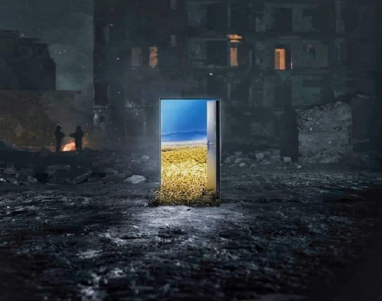

Інститут історії України
Теоретичні та методологічні проблеми дослідження всесвітньо-історичного процесу. Загальна концепція світової та вітчизняної історії. Методи історичних досліджень і спеціальних історичних дисциплін. Давня і середньовічна історія України. Україна у ХVІІІ – ХІХ ст. Історія України ХХ століття. Етнічна історія. Національне відродження українського народу. Сучасні національні та етнокультурні процеси. Релігія і церква в Україні. Історія і сучасні проблеми міжнародних відносин. Україна у європейському та глобальному соціально-історичному процесі.
